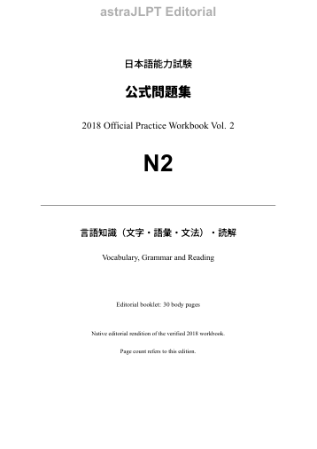
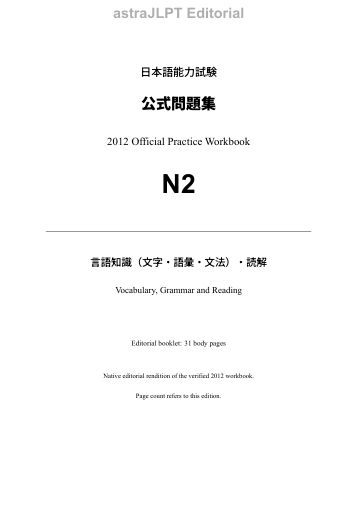
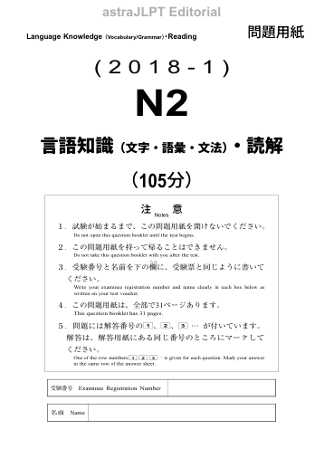
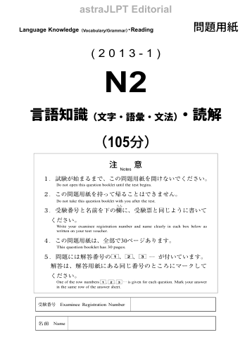
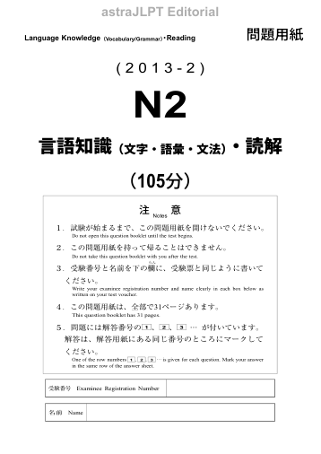
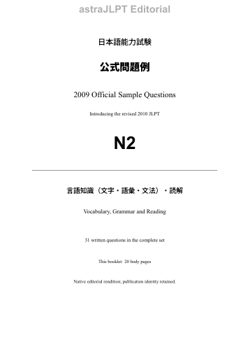

N2
2010–2026 collection
Ordered with higher quality papers presented first.
Principal source PDF available here for good units, also in Github additional-assets/





The older chapters
Written papers from the old test, with separate 1級, 2級, 3級 and 4級 collections. These levels are distinct from modern N1–N5.